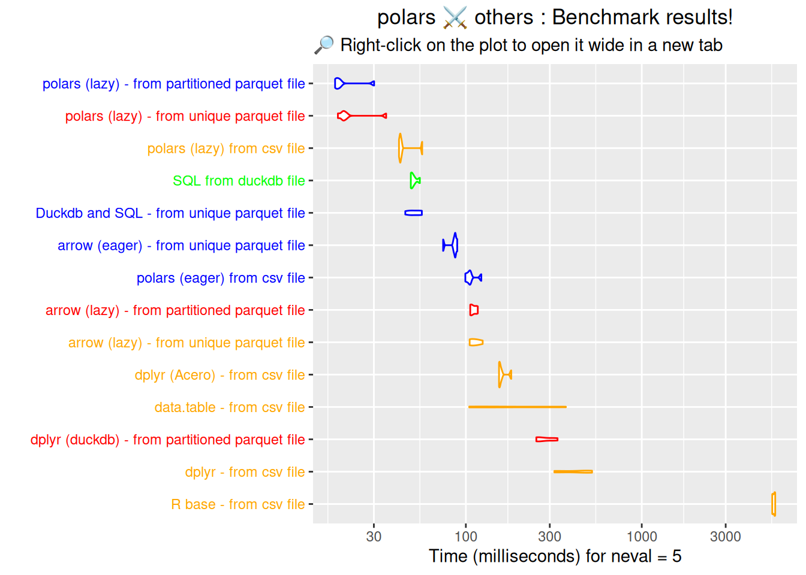
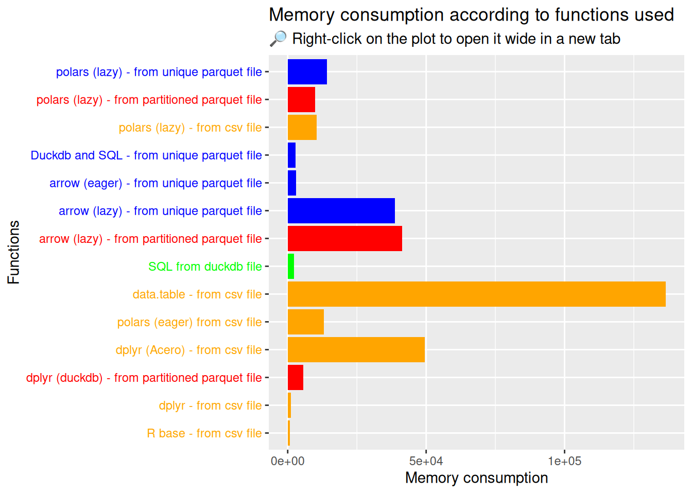

Below is the code used to create the fake data needed for the data processing in this document. Click to expand it! 👇
Code
library(polars)library(arrow)library(dplyr)library(data.table)library(DBI)library(duckdb)library(tictoc)library(microbenchmark)library(readr)library(fs)library(ggplot2)library(pryr)library(dbplyr)library(forcats)library(collapse)# Creation the "Datasets" folderdir.create(normalizePath("Datasets"))set.seed(123)# Creation of large example R data.frameDataMultiTypes <-data.frame(colDate1 =as.POSIXct(sample(as.POSIXct("2023-01-01"):as.POSIXct("2023-06-30"),500000),origin="1970-01-01"),colDate2 =as.POSIXct(sample(as.POSIXct("2023-07-01"):as.POSIXct("2023-12-31"),500000),origin="1970-01-01"),colInt =sample(1:10000, 500000, replace =TRUE),colNum =runif(500000),colString =sample(c("A", "B", "C"), 500000, replace =TRUE),colFactor =factor(sample(c("Low", "Medium", "High"), 500000, replace =TRUE)))DataMultiTypes_pl <-as_polars_df(DataMultiTypes)# Creation of large csv filewrite.csv(x = DataMultiTypes,file ="Datasets/DataMultiTypes.csv",row.names=FALSE)# Creation of unique parquet filearrow::write_parquet(x = DataMultiTypes,sink ="Datasets/DataMultiTypes.parquet")# Creation of 6 parquet filearrow::write_dataset(dataset = DataMultiTypes,path ="Datasets/DataMultiTypes",format =c("parquet"),partitioning =c("colFactor"))# Creation of duckdb filecon <-dbConnect(duckdb::duckdb(),"Datasets/DataMultiTypes.duckdb")duckdb::dbWriteTable(con,"DataMultiTypes", DataMultiTypes,overwrite =TRUE)dbDisconnect(con, shutdown=TRUE)
In this part of the book we will compare the performance of polars by comparing with other syntaxes, in particular R base, dplyr, dbplyr, SQL and data.table.
This section is structured according to the type of file format used for the comparison.
Note
The data processing that is performed makes very little statistical sense, but it does strive to perform some of the operations most frequently used by data scientists.
Data processing steps:
Conversion of two columns to Date format;
Filter from a integer column which must be within a range of values.
Grouping by a string column
Aggregation with calculation of the mean, minimum and maximum over two columns.
5.1 From an R object
This section analyses the different methods for making a query from an R object already loaded in memory.
Let’s start by comparing polars with R base, dplyr and data.table. We’ll alsso add collapse, a recent package that is very fast for data manipulation.
Now let’s look at how to use the DuckDb engine on R objects. There are 3 main possibilities:
To use the DuckDB engine to query a R object with dplyr, you can use the duckdb::duckdb_register() method and then the dplyr::tbl() method to pass your dplyr instructions (dplyr/DuckDB).
To use the DuckDB engine to query a R object with the standard DBI methods, you can use the duckdb::duckdb_register() method and then the DBI::dbGetQuery() method to pass your SQL query (SQL/DuckDB).
To use the DuckDB engine to query a R object in combination with {arrow} package, you can use the arrow::to_duckdb() and then pass your dplyr instructions (dplyr/arrow/DuckDB).
robject_duckdb_sql <-function(variables) { con <- DBI::dbConnect(duckdb::duckdb()) duckdb::duckdb_register(con, "DataMultiTypes", DataMultiTypes) DBI::dbGetQuery( con,"SELECT colString, MIN(colInt) AS min_colInt, AVG(colInt) AS mean_colInt, MAX(colInt) AS max_colInt, MIN(colNum) AS min_colNum, AVG(colNum) AS mean_colNum, MAX(colNum) AS max_colNum FROM ( SELECT colString, colInt, colNum FROM DataMultiTypes WHERE colInt > 2000 AND colInt < 8000) AS filtered_dataGROUP BY colString;") DBI::dbDisconnect(con, shutdown=TRUE)}
One of the advantages of using the DuckDB engine and dplyr may be to use a feature implemented by DuckDB but not yet by Arrow. We can do the opposite, and return to the Arrow engine with arrow::to_arrow().
However, the benchmark results are clear: SQL queries are by far the fastest! 🏆
👉 Conclusion of this little benchmark using R objects already loaded in memory: the fastest to run is collapse. Next are data.table and dplyr followed closely by polars. 🏆🏆🏆 The worst performer is surprisingly duckdb with the dplyr syntax, while duckdb with the SQL language does very well and comes 4th in this ranking.
csv_rbase <-function() {# Reading the csv file result <-read.csv("Datasets/DataMultiTypes.csv")# Conversion of 2 columns to Date format result$colDate1 <-as.Date(result$colDate1) result$colDate2 <-as.Date(result$colDate2)# Creation of a diff column between 2 dates (in days) result$diff <-round(as.integer(difftime( result$colDate2, result$colDate1,units ="days") ),0)# Filter rows result <- result[result$colInt>2000& result$colInt<8000,]# Grouping and aggregation result_agg <-aggregate(cbind(colInt, colNum) ~ colString,data = result,FUN =function(x) c(mean =mean(x),min =min(x),max =max(x)))return(result_agg)}tic()res_rbase <-csv_rbase()toc()
csv_dplyr <-function() {# Reading the csv file result <- readr::read_csv("Datasets/DataMultiTypes.csv", show_col_types =FALSE)# Conversion of 2 columns to Date format result <- result |>mutate(colDate1 =as.Date(colDate1),colDate2 =as.Date(colDate2) )# Creation of a diff column between 2 dates (in days) result <- result |>mutate(diff =round(as.integer(difftime(colDate2, colDate1, units ="days")),0))# Filter rows result <- result |>filter( colInt>2000& colInt<8000 )# Grouping and aggregation result_agg <- result |>group_by(colString) |>summarise(min_colInt =min(colInt),mean_colInt =mean(colInt),mas_colInt =max(colInt),min_colNum =min(colNum),mean_colNum =mean(colNum),max_colNum =max(colNum) )return(result_agg)}tic()res_dplyr <-csv_dplyr()toc()
csv_arrow <-function() {# Reading the csv file result <- arrow::read_csv_arrow("Datasets/DataMultiTypes.csv", as_data_frame =FALSE)# Conversion of 2 columns to Date format result <- result |>mutate(colDate1 =as.Date(colDate1),colDate2 =as.Date(colDate2) )# Creation of a diff column between 2 dates (in days) result <- result |># difftime(unit = "days") is not supported in arrow yetmutate(diff =round(as.integer64(difftime(colDate2, colDate1)) %/% (60*60*24), 0))# Filter rows result <- result |>filter( colInt>2000& colInt<8000 )# Grouping and aggregation result_agg <- result |>group_by(colString) |>summarise(min_colInt =min(colInt),mean_colInt =mean(colInt),mas_colInt =max(colInt),min_colNum =min(colNum),mean_colNum =mean(colNum),max_colNum =max(colNum) ) |>collect()return(result_agg)}tic()res_arrow <-csv_arrow()toc()
The data processing performed is not entirely equivalent, since it includes in addition: - for polars (lazy mode), conversion to data.frame R at the end of processing - for data.table, conversion to dt format at the start, then conversion to data.frame R at the end of processing
5.2.1 Results eager vs lazy mode
csv_bmk <-microbenchmark("polars (eager) from csv file"=csv_eager_polars(),"polars (lazy) from csv file"=csv_lazy_polars()$collect(),"R base - from csv file"=csv_rbase(),"dplyr - from csv file"=csv_dplyr(),"dplyr (Acero) - from csv file"=csv_arrow(),"data.table - from csv file"=csv_dt(),times =5 )csv_bmk
Unit: milliseconds
expr min lq mean median
polars (eager) from csv file 100.48013 103.76541 107.90041 104.73688
polars (lazy) from csv file 41.08494 41.96885 44.82443 42.94616
R base - from csv file 5600.22508 5681.45706 5739.60890 5728.54224
dplyr - from csv file 309.37926 316.11924 424.26705 470.44018
dplyr (Acero) - from csv file 155.96922 157.30546 163.22626 158.69962
data.table - from csv file 106.88642 117.78348 210.41461 142.64809
uq max neval
104.76259 125.75705 5
43.14876 54.97345 5
5787.28187 5900.53827 5
490.66174 534.73481 5
159.48425 184.67272 5
294.57813 390.17691 5
👉 Conclusion of this little benchmark based on csv files: the big winners are polars (eager mode) and dplyr with {arrow}. The results will undoubtedly be even better with polars (lazy mode)… 🏆🏆🏆 TO DO !!!
5.3 From an unique parquet file
For this comparison on unique parquet file, we will use :
For polars (lazy), the pl$scan_parquet() method
For arrow (eager), the arrow::read_parquet() method
For arrow (lazy), the arrow::open_dataset() method
For Duckdb and SQL, the arrow::read_parquet() and DBI::dbGetQuery() methods
parquet_duckdb_sql <-function(variables) { con <-dbConnect(duckdb::duckdb()) result <-dbGetQuery( con,"SELECT colString, MIN(colInt) AS min_colInt, AVG(colInt) AS mean_colInt, MAX(colInt) AS max_colInt, MIN(colNum) AS min_colNum, AVG(colNum) AS mean_colNum, MAX(colNum) AS max_colNum FROM ( SELECT colString, colInt, colNum FROM read_parquet('Datasets/DataMultiTypes.parquet') WHERE colInt > 2000 AND colInt < 8000) AS filtered_dataGROUP BY colString;")dbDisconnect(con, shutdown=TRUE)return(result)}tic()parquet_duckdb_sql()
partitioned_parquet_bmk <-microbenchmark("arrow (lazy) - from partitioned parquet file"=partitioned_parquet_arrow_lazy(),"dplyr (duckdb) - from partitioned parquet file"=partitioned_parquet_dplyr_duckdb(),"polars (lazy) - from partitioned parquet file"=as.data.frame(partitioned_parquet_polars_lazy()),times =5 )print(partitioned_parquet_bmk)
Unit: milliseconds
expr min lq mean
arrow (lazy) - from partitioned parquet file 109.04193 109.60004 112.81446
dplyr (duckdb) - from partitioned parquet file 259.53568 259.69340 289.07266
polars (lazy) - from partitioned parquet file 18.47167 18.68816 21.09008
median uq max neval
110.39521 115.33519 119.69991 5
272.07935 314.22499 339.82987 5
18.85978 19.17176 30.25904 5
👉 Conclusion of this little benchmark based on partitioned parquet files: as for unique parquet files, the big winner is polars (lazy mode) ! 🏆🏆🏆
5.5 From a DuckDb file
Let’s look at how to perform queries on duckdb files.
For this comparison, we will use :
For SQL, the DBI::dbGetQuery() method. In this way, we use the standard DBI methods to work from a DuckDb file.
duckdb_dbfile_sql <-function(variables) { con <-dbConnect(duckdb::duckdb(),"Datasets/DataMultiTypes.duckdb") result <-dbGetQuery( con, "SELECT colString, MIN(colInt) AS min_colInt, AVG(colInt) AS mean_colInt, MAX(colInt) AS max_colInt, MIN(colNum) AS min_colNum, AVG(colNum) AS mean_colNum, MAX(colNum) AS max_colNum FROM ( SELECT colString, colInt, colNum FROM DataMultiTypes WHERE colInt > 2000 AND colInt < 8000) AS filtered_dataGROUP BY colString;")dbDisconnect(con, shutdown=TRUE)return(result)}tic()duckdb_dbfile_sql()
Let’s do a quick sort on the expr column before plotting the results :
Code
# Sort the resultsbmk_results$expr <-reorder(bmk_results$expr, bmk_results$time, decreasing =TRUE)

Final conclusions
👉 A few conclusions can be drawn from this section on benchmarking:
It is more efficient to work from a parquet or duckdb file except for polars with lazy evaluation which is very fast;
In terms of execution speed, there is no great difference between a single parquet file and several partitioned parquet files (although the gap will undoubtedly widen in favour of partitioned files if the size of the initial work file is increased);
Lazy evaluation of polars performs best whatever the format of the file you are working on. 🏆🏆
It’s followed by SQL queries executed directly on a duckdb file. 🏆
5.6.2 Memory usage
We’ve just analysed the performance of the various alternatives to Polars, but what about R’s memory usage?
To do this, we’re going to use mem_change() from {pryr} package. This method tells you how memory changes during code execution. Positive numbers represent an increase in the memory used by R, and negative numbers represent a decrease.

Memory usage conclusions
👉 A few conclusions can be drawn from this section on benchmarking about memory usage:
Firstly, the method with data.table from a csv file surprisingly consumes a lot of RAM. Maybe it’s related to the as.data.table() conversion? If a reader has an explanation, I’m interested and feel free to open an issue;
Regarding csv files, syntaxes with R base and dplyr are the least consuming RAM (but at the expense of speed);
Regarding parquet files, syntaxes with arrow (eager) and Duckdb with SQL are the least consuming RAM;
The SQL language used on a Duckdb file also consumes very little RAM